2:09:36 · 37 OPERE
Problematicità del rapporto tra cognizione e realtà nel moderno.
Il filo del discorso
La conversazione interroga il rapporto fra soggetto, volontà e realtà nella modernità. Il relatore sostiene che sostituire il pensiero con l’arbitrio dell’io indebolisca la distinzione fra fatti e desideri; collega questa tesi alla critica dell’industria culturale e all’uso politico delle parole. Il mondo come volontà e rappresentazione, le Critiche kantiane e il limite del linguaggio in Wittgenstein offrono il nucleo filosofico di una lettura dichiaratamente polemica, non una ricostruzione neutrale delle rispettive dottrine. Il discorso passa dall’esempio della penna all’analisi delle parti, dai modelli atomici alle immagini artificiali, per chiedere come conoscere senza confondere rappresentazione e realtà. Il tema diventa etico attraverso Socrate, la dignità umana e la responsabilità verso gli altri. Nella discussione del finevita viene nominato Mar adentro, ma la trama raccontata non corrisponde al film: questa incongruenza va conservata come limite del parlato. Le valutazioni su medicina, pandemia e capacità decisionale non vengono trasformate in indicazioni sanitarie o giuridiche. Gli interventi dei partecipanti ampliano il confronto a Simone Weil, fiducia, istituzioni, differenza fra legalità e giustizia, rivoluzioni americana e francese e difficoltà del dissenso. La metafora del casco ideologico descrive la fatica di ascoltare interlocutori che assumono come ovvi paradigmi diversi. I giudizi sull’Unione europea, la magistratura e i conflitti contemporanei restano attribuiti alle voci del dialogo; le trascrizioni non consentono di assegnare con certezza ogni turno a un nome. Nell’ultima parte, Schopenhauer come educatore di Nietzsche e Fuga dalla libertà di Fromm aiutano i partecipanti a discutere conformismo, appartenenza e costo dell’autonomia. Il relatore legge la felicità domestica e il tempo della lettura come misura della funzione delle istituzioni, quindi torna a propaganda, sofistica e responsabilità culturale nei Quaderni di Gramsci. Resta aperto il contrasto fra una diagnosi sociale molto pessimistica e il dovere personale di continuare il confronto, anche senza garanzia di risultati immediati.
I libri nel discorso
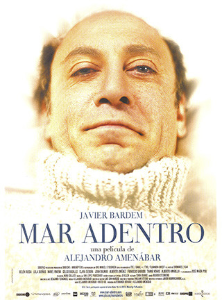
Mar adentro (Mare dentro)
Copertina: Locandina spagnola, archivio ufficiale Premios Goya
Titolo e anno 2004 sono pronunciati. La trama narrata nel dialogo non corrisponde al film: l’opera riguarda Ramón Sampedro, interpretato da Javier Bardem, paralizzato dopo un incidente, e la sua richiesta di morire; non un marito che uccide la moglie malata terminale. Il riferimento resta al film esplicitamente nominato, con rettifica. Locandina autentica con titolo, Bardem e regista leggibili; non copertina di un libro.
Titolo e anno espliciti, ma racconto della trama non corrispondente: il protagonista è Ramón Sampedro, non il marito di una malata terminale. Valutazioni sul finevita attribuite al relatore.
Passaggio 2:42 ↗ · Fonti e libro ↗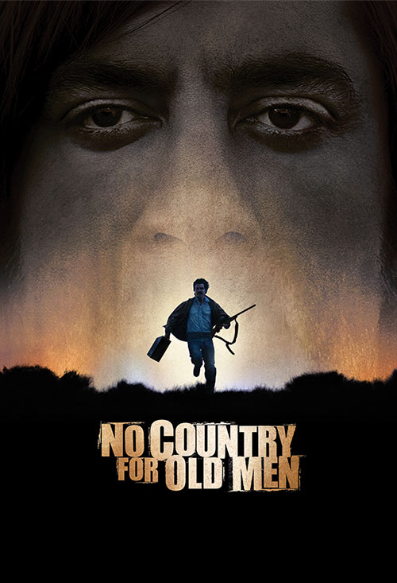
No Country for Old Men (Non è un paese per vecchi)
Copertina: Locandina ufficiale Miramax del film 2007
Titolo inglese pronunciato in modo approssimativo nel richiamo all’interprete del film precedente. Miramax conferma Javier Bardem e regia/sceneggiatura dei Coen. Locandina autentica del film, non copertina del romanzo di Cormac Mc Carthy; nessuna recensione integrale del film è svolta nel video.
Titolo inglese deformato dalla trascrizione automatica ma riconoscibile, citato soltanto per l’attore Javier Bardem, senza analisi del film.
Passaggio 3:55 ↗ · Fonti e libro ↗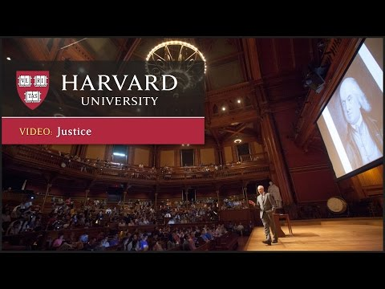
The Moral Side of Murder (Justice, lezione 1)
Identificazione probabile
Miniatura Harvard della prima lezione di Justice: Harvard University · Justice, lezione 1 · lezione The Moral Side of Murder
Miniatura autentica del video sul canale Harvard, con il docente e il Sanders Theatre. Non è una copertina del libro Justice e non prova da sola che l’esemplare del filmato discusso dal relatore fosse quello stesso caricamento.
Lezione di Harvard sul dilemma del carrello e varianti: titolo e nome non pronunciati; corrispondenza probabile al corso di Sandel, non identificazione dalla somiglianza fisica evocata.
Passaggio 5:05 ↗ · Fonti e libro ↗
Risvegli (Awakenings)
Copertina: Originale Awakenings, 1973. Prima traduzione italiana di Andrea Salmaggi, 1987; nuova edizione ampliata nel 1991 con le parti aggiunte tradotte da Isabella Blum. Copertina gli Adelphi 79, prima edizione nella collana 1995, 560 pagine e sei tavole, ISBN 9788845911477. La tiratura dell’immagine attuale non è attribuita al video.
Immagine autentica dell’opera, controllata visivamente; l’edizione di riferimento non è attribuita al filmato.
Sacks e Risvegli espliciti. I casi narrati non autorizzano una prognosi individuale, una guarigione certa futura o equivalenze tra patologie diverse.
Passaggio 8:52 ↗ · Fonti e libro ↗
Risvegli (Awakenings, film)
Immagine promozionale ufficiale · Awakenings, 1990: Film Columbia Pictures del 1990, con Robin Williams nel ruolo di Malcolm Sayer e Robert De Niro in quello di Leonard Lowe, tratto dal libro di Oliver Sacks. Immagine promozionale autentica Sony, non copertina del libro né fotografia documentaria del medico.
Materiale promozionale Sony: gli interpreti rappresentano personaggi del film, non sono ritratti storici di Sacks e del suo paziente.
Adattamento cinematografico di Risvegli ricordato accanto al libro; opera distinta dalla fonte letteraria, nessuna edizione visionata.
Passaggio 8:58 ↗ · Fonti e libro ↗
Grundgesetz für die Bundesrepublik Deutschland
Copertina dell’edizione Bundestag 2025: Grundgesetz: Deutscher Bundestag, Neuauflage 2025. Testo del 23 maggio 1949 aggiornato al 22 marzo 2025. Copertina integrale dell’opuscolo ufficiale, pagina 1 del PDF.
Copertina grigia con aquila, Deutscher Bundestag, titolo e bollino magenta Neuauflage 2025. Edizione istituzionale di riferimento successiva al video; non una presunta copertina originale 1949.
Primo articolo della Legge fondamentale tedesca sulla dignità umana esplicitamente richiamato.
Passaggio 10:32 ↗ · Fonti e libro ↗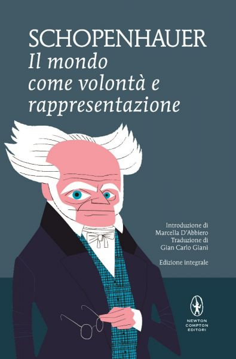
Il mondo come volontà e rappresentazione
Copertina: Newton Compton · edizione di riferimento
Titolo e 1818 nel parlato. L’uscita a fine 1818 reca sul frontespizio 1819; lettura critica della volontà e confronto con Kant/Platone sono del relatore.
Passaggio 13:39 ↗ · Fonti e libro ↗
Critica della ragione pura
Copertina: Adelphi · Gli Adelphi 85, 1995 · traduzione e cura Giorgio Colli
Immagine autentica dell’opera, controllata visivamente; l’edizione di riferimento non è attribuita al filmato.
Critica della ragion pura esplicita e nuovamente discussa a 1417 s. La critica del relatore non prova che Kant non definisca la ragione: testo AAIII43/AAIV193 da confrontare.
Passaggio 16:48 ↗ · Fonti e libro ↗
Tractatus logico-philosophicus
Identificazione probabile
Copertina del volume che comprende il Tractatus: Einaudi · Tractatus logico-philosophicus e Quaderni 1914–1916 · 2009
Copertina del volume Einaudi che comprende sia il Tractatus sia i Quaderni 1914–1916. La voce identifica il Tractatus; l’ISBN appartiene al volume contenitore e l’edizione non è accertata nel filmato.
Citazione della proposizione 7 sul tacere: titolo non pronunciato, identificazione testuale specifica. La sua genealogia kantiana è interpretazione del relatore.
Passaggio 18:28 ↗ · Fonti e libro ↗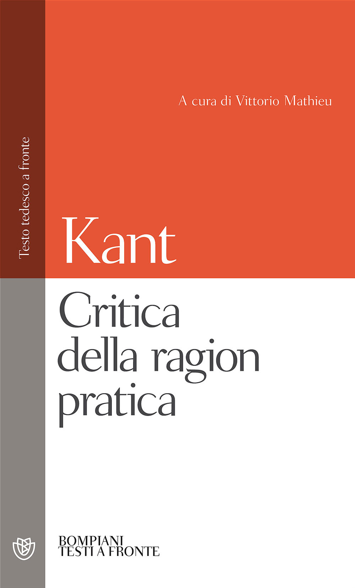
Critica della ragion pratica
Copertina: Bompiani, 2000
Titolo enumerato nella discussione della critica e della divisione; non recensione autonoma.
Passaggio 23:37 ↗ · Fonti e libro ↗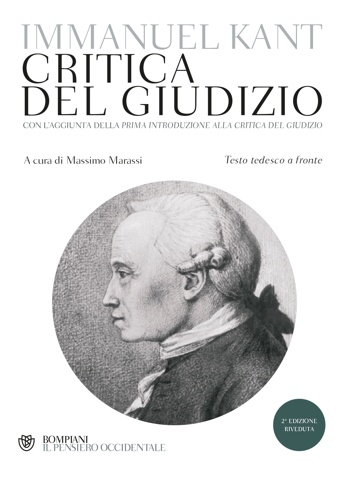
Critica del giudizio
Copertina: Bompiani, 2015
Titolo enumerato con le altre Critiche kantiane; distinto da una nuova monografia su Kant.
Passaggio 23:37 ↗ · Fonti e libro ↗
Ritorno al futuro (Back to the Future)
Fotografia promozionale di Ritorno al futuro: Fotografia promozionale del film del 1985, archivio del produttore Amblin.
Fotografia promozionale ufficiale, non locandina né copertina editoriale; la provenienza è il sito del produttore Amblin.
Titolo esplicito nel racconto di un video con set simulati; non si attribuisce quel montaggio al film originale né se ne identifica il creatore.
Passaggio 33:35 ↗ · Fonti e libro ↗
Apologia di Socrate
Copertina del volume Apologia di Socrate. Critone: BUR · Apologia di Socrate. Critone · a cura di Maria Michela Sassi, 1993
Copertina autentica del volume BUR contenente Apologia di Socrate e Critone. Il secondo titolo non è aggiunto come citazione del video; l’autore del testo è Platone, con Socrate come figura protagonista.
Titolo esplicito, cura della polis e risposta di Socrate alla condanna. Il sostentamento nel Pritaneo non equivale a chiedere di diventare ricco.
Passaggio 46:51 ↗ · Fonti e libro ↗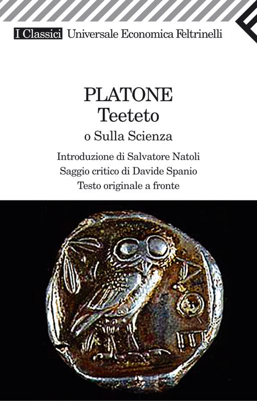
Teeteto, o sulla scienza
Identificazione probabile
Copertina: Feltrinelli · 1994 · traduzione di Luca Antonelli, introduzione di Salvatore Natoli, saggio di Davide Spanio
Immagine autentica dell’opera, controllata visivamente; l’edizione di riferimento non è attribuita al filmato.
Metafora di Socrate levatrice collazionata nel Teeteto 149–151, benché nel dialogo venga accostata all’Apologia; titolo non pronunciato.
Passaggio 47:04 ↗ · Fonti e libro ↗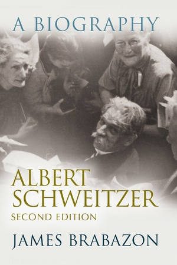
Albert Schweitzer: A Biography
Identificazione probabile
Copertina: Syracuse University Press · seconda edizione · ISBN 9780815606758
Copertina autentica della seconda edizione proposta dall’editore, con la dicitura Second Edition visibile. L’esemplare usato dal relatore non è accertato.
Biografia di Schweitzer e nome Brabazon riconoscibile nella trascrizione automatica; aneddoti e giudizi sono riferiti al racconto del relatore, non verifiche indipendenti delle singole scene.
Passaggio 53:47 ↗ · Fonti e libro ↗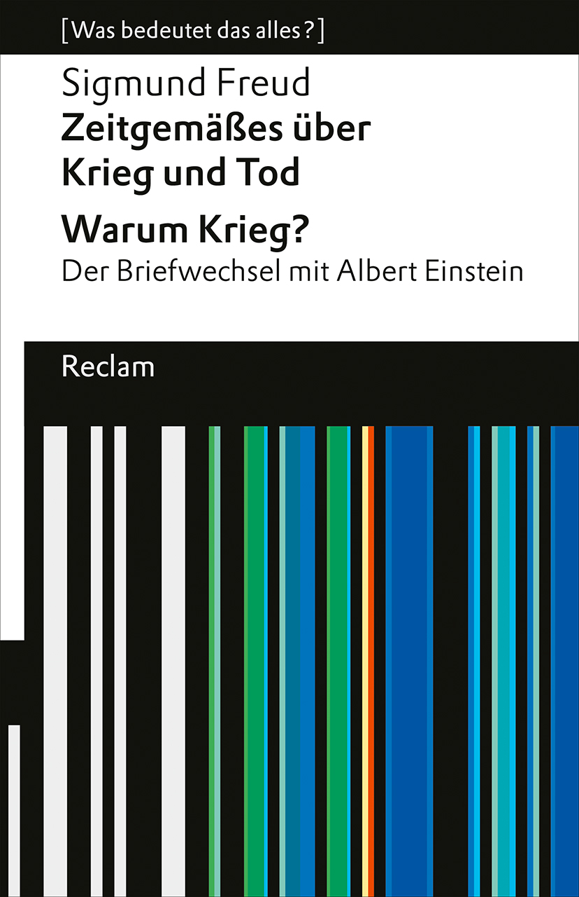
Zeitgemäßes über Krieg und Tod (Considerazioni attuali sulla guerra e la morte)
Identificazione probabile
Copertina della raccolta Reclam che contiene il saggio del 1915: Reclam 2022, raccolta di Zeitgemäßes… e Warum Krieg?, ISBN 9783150142769
Il relatore richiama Freud, 1915, Imago e un saggio su guerra/ostilità senza enunciarne il titolo completo. Freud Edition documenta precisamente Zeitgemäßes über Krieg und Tod, Imago 4(1), 1915, pp.1–21; non si identifica Vergänglichkeit dal solo anno. Copertina autentica Reclam della raccolta che contiene questo saggio e il distinto carteggio Warum Krieg?, non edizione autonoma del 1915 né edizione accertata nel video.
Freud, 1915, Imago e guerra: combinazione riscontrata in Imago 4(1), pp.1–21. Titolo non pronunciato; distinto da Vergänglichkeit.
Passaggio 1:00:28 ↗ · Fonti e libro ↗
Psicologia delle masse e analisi dell’Io
Identificazione probabile
Copertina: Einaudi, 2013
Titolo reso in forma deformata ma riconoscibile con analisi dell’Io e delle masse; riferimento a Freud, non attribuzione di una diagnosi a gruppi attuali.
Passaggio 1:00:42 ↗ · Fonti e libro ↗
Dichiarazione d’indipendenza degli Stati Uniti d’America
Identificazione probabile
Facsimile: incisione di Stone del 1823: Documento del 4 luglio 1776 · incisione di William J. Stone del 1823
Riproduzione documentaria dell’incisione di Stone del 1823 conservata dai National Archives. Non è la pergamena originale del 1776, né la copertina di un libro.
Formula sui diritti alla vita, libertà e ricerca della felicità: documento non nominato per esteso, identificazione testuale probabile.
Passaggio 1:03:16 ↗ · Fonti e libro ↗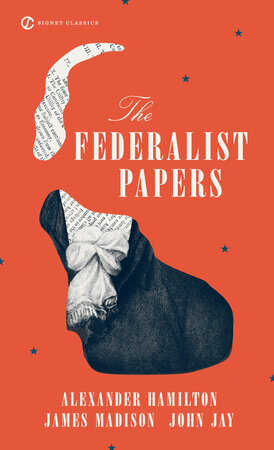
The Federalist Papers
Copertina: Signet Classics 2003, a cura di Clinton Rossiter, ISBN 9780451528810
La raccolta Federalist Papers è nominata nel confronto tra rivoluzione americana e francese. Copertina autentica Signet/PRH con titolo e tre autori; edizione 2003, non copia identificata nel video. La voce riguarda l’insieme dei saggi, distinta dal Federalist No.10 già catalogato; nessuna menzione ridondante del No.10 è aggiunta per lo stesso passo.
Raccolta nominata nel confronto tra tradizioni rivoluzionarie; non si aggiunge un richiamo separato al No.10 per lo stesso passo.
Passaggio 1:03:42 ↗ · Fonti e libro ↗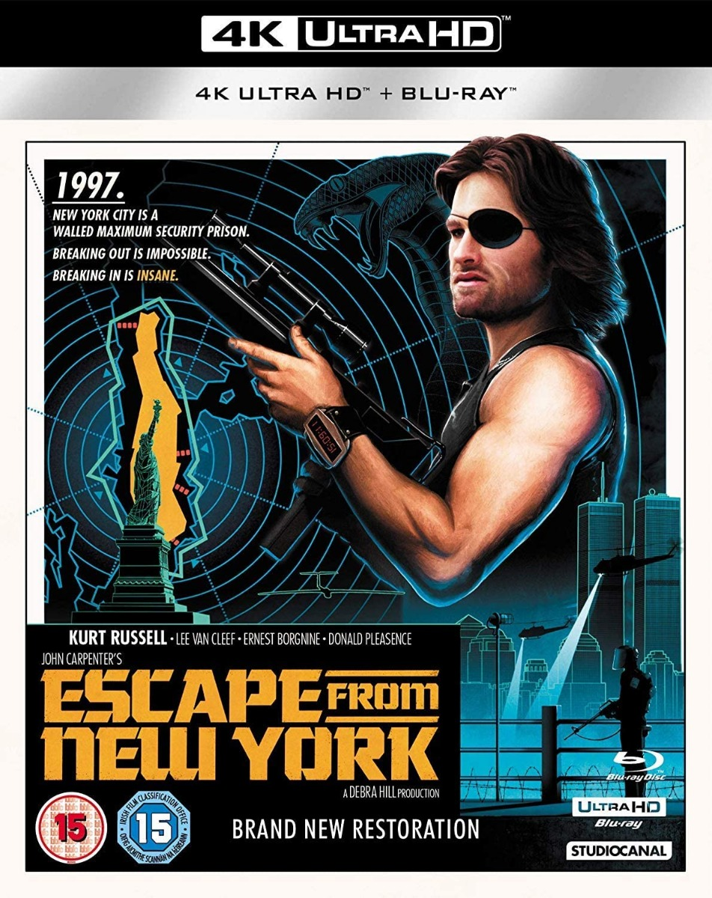
Escape from New York (1997: Fuga da New York)
Copertina: Studio Canal, edizione 4 KUltra HD/Blu-ray del restauro 2018, OPTU4218
Titolo esplicito usato come paragone polemico con New York contemporanea: non previsione o dato sulla città. Copertina autentica dell’edizione Studio Canal 4 K/Blu-ray fornita dal BFI; 1997 è il tempo della finzione, il film è del 1981, e il restauro del 2018 non è un nuovo film.
Titolo inglese esplicito usato come metafora polemica, non come dato statistico sulla New York contemporanea.
Passaggio 1:07:34 ↗ · Fonti e libro ↗
Il Canto degli Italiani (Inno di Mameli)
Identificazione probabile
Frontespizio della partitura autografa · Michele Novaro: FRONTESPIZIO della partitura autografa di Michele Novaro, riprodotta dalla Presidenza del Consiglio: titolo Il Canto degli Italiani, poesia di Goffredo Mameli e musica di Michele Novaro leggibili. Prima pagina del PDF ufficiale, resa integralmente in PNG. Non è il manoscritto autografo dei versi di Mameli né una copertina moderna.
Immagine autentica dell’opera, controllata visivamente; l’edizione di riferimento non è attribuita al filmato.
Allusione ai versi sulla divisione degli italiani, resa imperfettamente dalla trascrizione automatica; titolo non pronunciato e identificazione mantenuta probabile.
Passaggio 1:10:58 ↗ · Fonti e libro ↗
Costituzione della Repubblica Italiana
Copertina dell’edizione Intra aggiornata al 2023: Intra · 2023 · introduzione di Umberto Vincenti
Copertina autentica del testo integrale, aggiornata alla legge costituzionale 26 settembre 2023 n.1. È successiva al filmato del 2019 e non rappresenta la versione storica letta dal relatore. Umberto Vincenti firma l’introduzione.
Art.1, sovranità popolare nelle forme e nei limiti della Costituzione; un partecipante propone una lettura etica dei principi fondamentali, distinta da un parere legale.
Passaggio 1:15:06 ↗ · Fonti e libro ↗
La liberazione dalla società opulenta (Liberation from the Affluent Society)
Identificazione probabile
Raccolta contenente la conferenza · Einaudi 1970: La stessa fotografia di Dialettica della liberazione, Einaudi seconda edizione 1970, illustra la raccolta contenente il contributo. Non è una copertina autonoma del saggio o del diverso Saggio sulla liberazione.
Immagine autentica dell’opera, controllata visivamente; l’edizione di riferimento non è attribuita al filmato.
Un partecipante evoca l’intervento di Marcuse al congresso londinese del 1967, senza pronunciarne il titolo. L’identificazione resta probabile.
Passaggio 1:21:12 ↗ · Fonti e libro ↗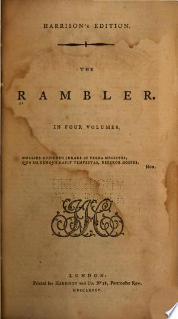
The Rambler, n.68 (10 novembre 1750)
Identificazione probabile
Frontespizio della raccolta The Rambler, Harrison 1785; non fascicolo 68: Frontespizio della raccolta The Rambler, Harrison’s Edition, Londra 1785
La massima sulla felicità domestica è attribuita nel parlato a Ben Johnson e poi ripresa tramite Lewis. Il testo primario di Samuel Johnson, Rambler 68 del 10 novembre 1750, par.5, riscontra la formulazione originaria; il titolo del saggio non è pronunciato, identificazione probabile. Immagine autentica del frontespizio della raccolta Harrison’s Edition 1785: non copertina autonoma deln.68 e non prima edizione del 1750.
Massima sulla felicità domestica: autore corretto Samuel Johnson, non Ben Jonson; Rambler 68 collazionato, titolo non pronunciato. La formula poi letta attraverso Lewis è una parafrasi.
Passaggio 1:22:17 ↗ · Fonti e libro ↗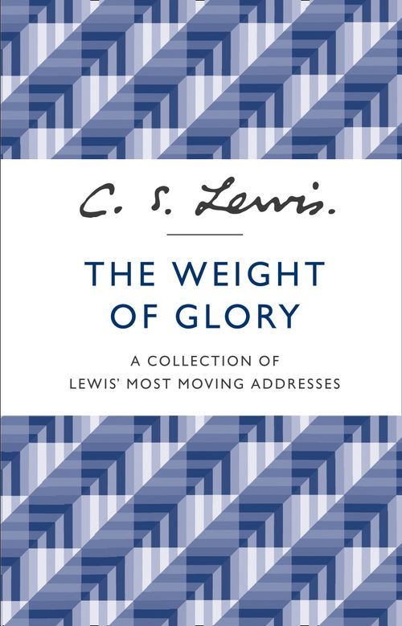
Membership
Identificazione probabile
Copertina della raccolta omonima; Membership attestato nella distinta riproduzione GW: William Collins · The Weight of Glory · ebook · 2013
Copertina dell’ebook William Collins del 2013, dalla raccolta The Weight of Glory. Membership è attestato nella distinta riproduzione universitaria GW, che reca titolo del saggio e testate della raccolta; non è stato verificato un indice primario dell’esatta edizione ebook ISBN 9780007532810 e non se ne certifica la stessa composizione. L’immagine non è una copertina autonoma di Membership, né l’edizione della scansione o la copia del video. Il 2013 è la data dell’ebook illustrativo, non prima pubblicazione del saggio; il 1939 del diverso Learning in War-Time non è trasferito a Membership.
Il relatore nomina C. S. Lewis e legge/parafrasa una sequenza distintiva: famiglia a tavola, amici davanti a una birra, lettore solitario e istituzioni al servizio di questi beni. Titolo e fonte bibliografica non sono pronunciati.
Passaggio 1:23:02 ↗ · Fonti e libro ↗
Lo spirito delle leggi
Copertina: BUR · 1989 · a cura di Robert Derathé · edizione in due volumi
Immagine ufficiale dell’edizione BUR in due volumi; non mostra l’intera coppia di esemplari e non identifica l’edizione del video.
Titolo francese e Montesquieu espliciti nel passaggio sulla funzione delle istituzioni.
Passaggio 1:25:45 ↗ · Fonti e libro ↗
Genesi
Identificazione probabile
Copertina: Einaudi, I libri della Bibbia / Einaudi Tascabili, 2000; introduzione di Steven Rose
Copertina dell’edizione autonoma Genesi, nella serie I libri della Bibbia, con introduzione di Steven Rose. Edizione scelta come riferimento iconografico; nessuna edizione è confermata nel video.
Caino e fondazione della città (Gen 4:17); più avanti serpente e promessa di essere come Dio (Gen 3:5). Interpretazione delle città e della modernità attribuita al relatore, non tesi storica provata dal testo biblico.
Passaggio 1:28:50 ↗ · Fonti e libro ↗
Comandante ad Auschwitz
Identificazione probabile
Copertina: Einaudi tascabili. Saggi, 8 aprile 2014, 268 pagine, ISBN 9788806221164. Traduzione di Giuseppina Panzieri Saija, prefazione di Primo Levi e articolo di Alberto Moravia. Non è certificato l’esemplare mostrato o posseduto dal relatore.
Copertina autentica Einaudi vista integralmente: ritratto in alto, autore Rudolf Höss, titolo Comandante ad Auschwitz, prefazione di Primo Levi e articolo di Alberto Moravia. Le descrizioni commerciali non sono utilizzate come fonte del numero delle vittime di Auschwitz.
Richiamo alle memorie del comandante di Auschwitz; nome deformato dalla trascrizione automatica, identificazione probabile. Non si accomunano come autobiografie certe gli scritti di Höss e i colloqui di Stangl.
Passaggio 1:32:35 ↗ · Fonti e libro ↗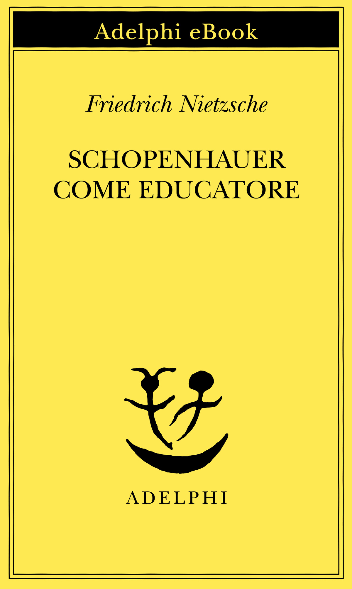
Schopenhauer come educatore (Schopenhauer als Erzieher)
Copertina: Adelphi e Book 2017, a cura di Mazzino Montinari, ISBN 9788845977732
Titolo esplicito nel contributo di un partecipante sul prezzo del pensiero controcorrente. Terza Considerazione inattuale, 1874, di Nietzsche e non di Schopenhauer. L’immagine raffigura l’edizione digitale Adelphi del 2017, distinta dall’edizione cartacea del 1985 e dalla copia eventualmente utilizzata nel video.
Titolo esplicito di Nietzsche nel contributo sul costo del pensiero controcorrente; non opera di Schopenhauer.
Passaggio 1:43:05 ↗ · Fonti e libro ↗Fuga dalla libertà
Copertina: Mondadori, 2022
Titolo e Fromm espliciti: un partecipante vi cerca una risposta al bisogno di appartenenza e all’adesione alla tirannia.
Passaggio 1:44:41 ↗ · Fonti e libro ↗
Sul concetto di storia (Über den Begriff der Geschichte)
Identificazione probabile
Copertina: Copertina ufficiale Suhrkamp del volume19 dell’edizione critica, a cura di Gérard Raulet, prima uscita 2010, ristampa 2021, ISBN 9783518585498. Nome Benjamin e titolo tedesco leggibili su fondo grigio. Il testo è del 1940; non si attribuisce questa edizione al filmato.
Immagine autentica dell’opera, controllata visivamente; l’edizione di riferimento non è attribuita al filmato.
L’interlocutore ricorda spari agli orologi di Parigi per fermare simbolicamente il tempo e li associa alla Comune. Non pronuncia né Benjamin né il titolo.
Passaggio 1:46:26 ↗ · Fonti e libro ↗
1984
Identificazione probabile
Copertina: Newton Compton · edizione illustrativa
Due minuti d’odio del romanzo richiamati come analogia della rabbia costruita; non prova documentaria di un piano politico attuale.
Passaggio 1:48:55 ↗ · Fonti e libro ↗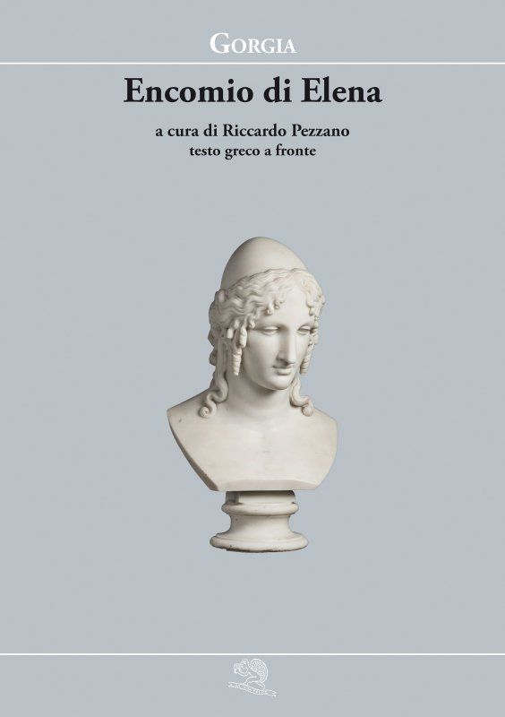
Encomio di Elena
Copertina: La Vita Felice, Piccola Biblioteca della Felicità 29, 2021, a cura di Riccardo Pezzano, testo greco a fronte, 64 pagine.
Immagine autentica dell’opera, controllata visivamente; l’edizione di riferimento non è attribuita al filmato.
Elogio di Elena e sofistica sono richiamati esplicitamente; il titolo bibliografico è Encomio di Elena.
Passaggio 1:54:00 ↗ · Fonti e libro ↗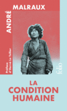
La Condition humaine (La condizione umana)
Identificazione probabile
Copertina ufficiale dell’edizione speciale Gallimard 2026, illustrativa e successiva al video: Gallimard · Folio, Éditions spéciales · 8 ottobre 2026 · ISBN 9782073166395
Copertina ufficiale dell’edizione speciale Gallimard 2026, successiva al video e usata soltanto per illustrare il romanzo del 1933. La copia e la traduzione del relatore non sono determinate. Il 2026 non è attribuito al testo pronunciato, né presentato come prima pubblicazione dell’opera.
La correzione del nome verso Malraux inizia a 7039.61 s; a 7068.97 s compare la formula distintiva malattia chimerica, seguita dalla giustificazione intellettuale della volontà di potenza e dal desiderio umano di essere Dio. Il titolo non è pronunciato.
Passaggio 1:57:48 ↗ · Fonti e libro ↗
Esodo
Identificazione probabile
Volume di riferimento: San Paolo, 2014 · Nuova Versione dai Testi Antichi · edizione di riferimento
Copertina della Bibbia completa, che contiene l’Esodo. Non è la copertina di un’edizione autonoma del libro biblico; la traduzione non è attribuita al contributo.
Primo comandamento richiamato nella lettura teologica della volontà: identificazione testuale probabile, nessuna descrizione clinica dei dissenzienti.
Passaggio 1:58:33 ↗ · Fonti e libro ↗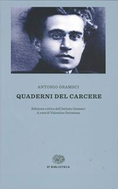
Quaderni del carcere
Copertina: Einaudi, ET Biblioteca, 18 luglio 2014, ISBN 9788806223441, edizione critica dell’Istituto Gramsci a cura di Valentino Gerratana, in quattro volumi con apparato. Copertina grigio-azzurra con ritratto di Gramsci; la scheda commerciale indica 3480 pagine, mentre alcune descrizioni catalografiche computano separatamente preliminari e testo. Edizione critica originaria 1975; i quaderni furono scritti nel 1929–1935. La variante commerciale Quaderni dal carcere non è registrata come seconda opera.
Copertina intera dell’edizione in quattro volumi, non una fotografia dei manoscritti o dei quattro dorsi. Il riferimento del video è al testo Q15§5, non all’intera edizione letta integralmente dal redattore.
Quaderni di Gramsci espliciti. L’ipotesi del relatore su Togliatti è dichiarata immaginazione e non viene presentata come fatto accertato.
Passaggio 2:03:30 ↗ · Fonti e libro ↗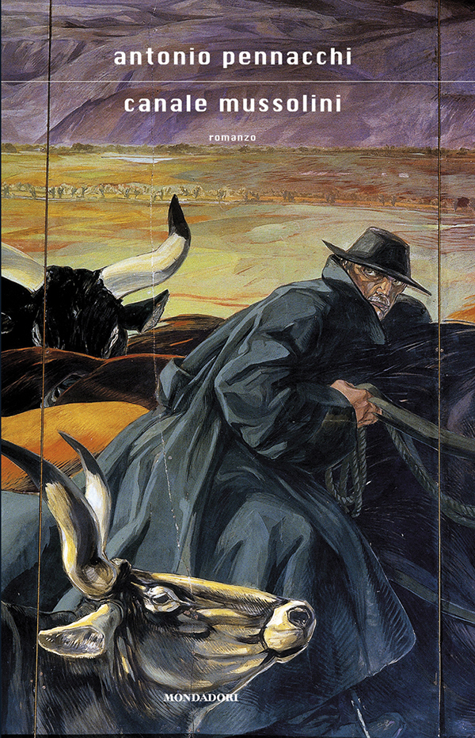
Canale Mussolini
Copertina: Fotografia della copertina Mondadori collegata alla scheda del Premio Strega 2010, titolo Canale Mussolini senza numero di seguito. È il primo romanzo, poi riproposto anche come Parte prima. Nessun ISBN desunto dalla sol’immagine e nessuna tiratura attribuita al video.
Immagine autentica dell’opera, controllata visivamente; l’edizione di riferimento non è attribuita al filmato.
Titolo e Pennacchi espliciti; romanzo distinto dalla ricerca storica documentaria e giudizio comparativo attribuito al relatore.
Passaggio 2:07:39 ↗ · Fonti e libro ↗